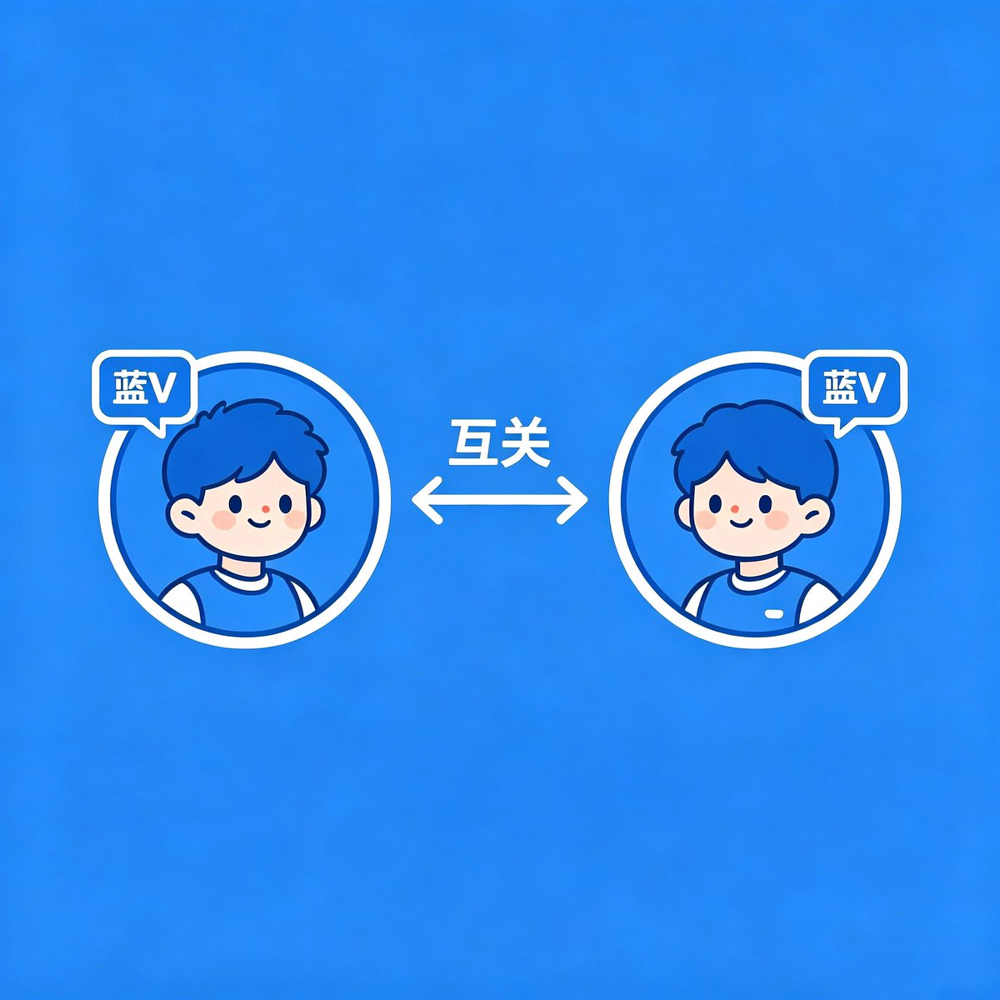

铨Quan🏳️⚧️🍥｜雪秋重度依赖
@YongQuan
@colacat999 @fuwa2023 （探头
其实互关不够 真正挣钱的是互动
所以给老师开小铃铛了！

可乐猫
@colacat999
这两天蓝V互关也太热闹了吧？好多人都在问：新面孔到底在哪儿啊？
所以——
新面孔到底在哪儿嘛？
欢迎蓝V互关，一起扩列，一起认识更多新朋友～
发完这条睡觉了，直接关注，明早起床立马回关。欢迎评论区留言大家一起互相关注！
晚安😴
#蓝V互关 https://t.co/ePkPktYkXM